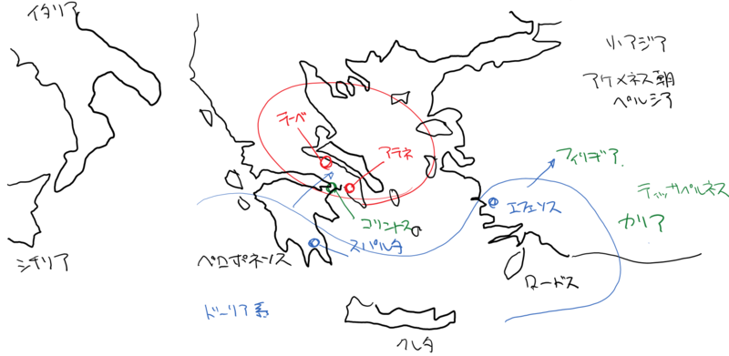

『アゲシラオス』
公開日：
")
- 作者: クセノポン,松本仁助
- 出版社/メーカー: 京都大学学術出版会
- 発売日: 2000/06
- メディア: 単行本
- クリック: 2回
- この商品を含むブログ (1件) を見る
『クセノポン小品集』より。アゲシラオスについては Wikipedia（アゲシラオス2世 - Wikipedia）でも参照してくれたまい。
")
- 作者: ネポス,上村健二,山下太郎
- 出版社/メーカー: 国文社
- 発売日: 1995/04
- メディア: 単行本
- この商品を含むブログを見る
ネポス『英雄伝』の方が記述が簡潔で読みやすかったので、自分はそっちも参照した。

アゲシラオスの生涯をとても簡単に説明すると――
兄の死後、野心家リュクサンデルの支援を受け、兄の子を差し置いて王位に就く（リュクサンデルはそのあと捨てられたらしい）。
彼は武勇に優れており、ペルシア王アルタクセルクセスがギリシアを狙っているという情報を得ると、ギリシアで迎え撃つよりも小アジアに乗り込んで叩きのめしてしまえとエフェソスに上陸。カリアの太守テッサペルネス（こいつが割と詐術を弄する系の小者）の策の裏をかき、2度にわたって破り名声を得る（テッサペルネスはのちにペルシア王の逆鱗に触れ、ぶっ殺される）。
しかしそのころ、ギリシアではテーベをはじめとする諸都市がスパルタに対する敵意を爆発させていた（だいたいリュクサンデルがいろいろヒドいことをしたせい）。のちに言うコリントス戦争である。
アゲシラオスは監督官の要請を受け、小アジアでの勝利で得た果実をあっさり捨ててスパルタの救援に赴き、アテネとボイオティア（テーバイ）の軍を破った。このとき、アゲシラオスは神殿に逃げ込んだ敵を許したり（彼は非常に信心深いヒトだったらしい）、「団結して異民族（ペルシア）と戦わないと破滅するぞ！」と嘆いたりしている。しかし、アゲシラオスの活躍もむなしく、スパルタはレウクトラで名将エパメイノンダス率いるテーベ・アテネ連合軍に敗北。アゲシラオスと王位を分かち合っていたクレオンブロトス1世が戦死し、ギリシアにおける覇権を永久に失うこととなった。アゲシラオスはこの戦いに参加していなかったが、以後は、祖国を滅亡から救うために東奔西走、戦争や外交、ときには金策にまで精を出すことになる。
――そして、レウクトラから10年。
マンティネアの戦いで再びスパルタはエパメイノンダス率いるテーベ軍と対峙する。この戦いでスパルタは敗北したが、見事エパメイノンダスを討ち取り、テーバイをギリシア第一の都市から引きずりおろした。その後、アゲシラオスはエジプトへ金策へ出かけた帰りに船上で死去。スパルタ古来の質素な生活を守り、身分の低いものにも分け隔てなく接したため、クセノポンなどは心酔していたらしい。亡くなったときも遺体を保存するために塗る蜂蜜を持ち合わせず（ゼータクだから！）、蝋で代用したという。
ちなみに、多分これから読む『ラケダイモン人の国制』にも出てくると思うけれど、スパルタの国制はちょっと面白い。2人の王を擁くが、その権限は非常に制限されていて、実際の政治はむしろ監督官によって動かされていた。
スパルタは、始祖のエウリュステネスとプロクレスが双子だったことから、この二人の血統であるアギス家とエウリュポン家の二家の世襲の王を戴いていた。その一方で、監督官の存在によって王の権限は立憲君主制の君主のように大きく制限されていた。王の権利は軍の指揮権、会戦時に右翼に陣取って指揮する権利（右翼は最も危険な場所であり、その分そこを占めることは名誉とされていた）、祭事に関する諸権利などであった。
監督官の要請で小アジアから戻ってくるところなど、アゲシラオスも彼らの決定を尊重していたことがうかがえる。
なので、直接民主制から衆愚政治に陥ったアテネよりも、長く安定した共和政体が続いたスパルタを評価する人は少なくない。なかでもアゲシラオスは「能力があってもしゃしゃり出ない」「富に溺れない」「必要以上に権力を用いない」といった古典的共和主義の徳目を満たした君主として評価が高い。